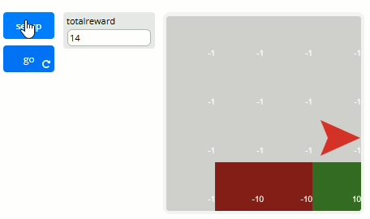
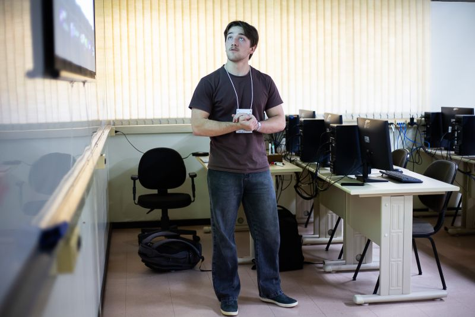
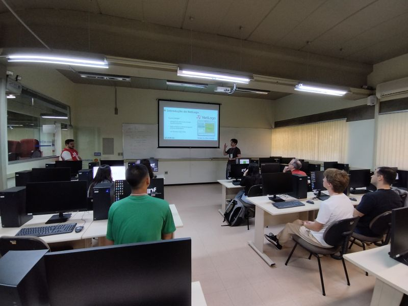
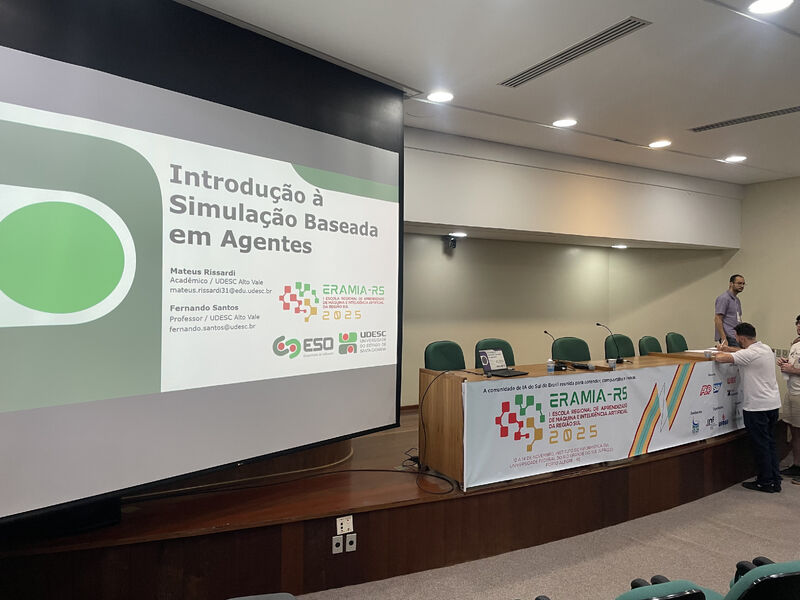
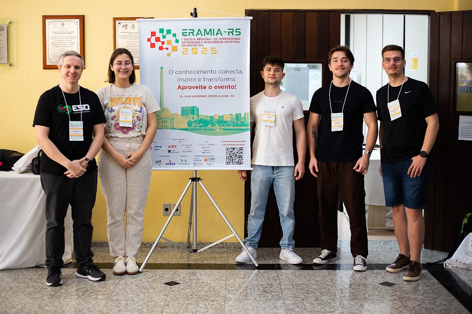

Bem Vindo a Landing Page
Olá! Me chamo Mateus Rissardi e sou estudante de Engenharia de Software na Universidade Estadual de Santa Catarina (UDESC), e este espaço reúne meus principais projetos e aprendizados. Aqui, você encontrará algumas de minhas antigas experiências no mercado de trabalho, projetos pessoais e muito mais!

minhas vagas anteriores
Bolsista de Pesquisa - Estudo e Desenvolvimento de Ferramentas e Simulações Baseadas em Agentes.
Duração: 08/25 - o momento
Tem como objetivo aprender como usar ferramentas baseadas em agentes, a escolhida para essa bolsa sendo o NetLogo, e desenvolver ferramentas de Reinforcement Learning como objetivo de pesquisa. Durante a bolsa aprendi a desenvolver simulações baseadas em agentes, utilizando o NetLogo, aprendi sobre os conceitos básicos de Reinforcement Learning e seus algoritmos, em específico o algoritmo Q-Learning, e apliquei os conhecimentos desses algoritmos dentro de simulações baseadas em agentes.
Bolsista de Apoio Discente na Coordenadoria de Informática
Duração: 05/25 - 08/25 - 4 meses
Tinha como objetivo dar assistência técnica, a chamados reservados na área de informática, para os funcionários e alunos da faculdade. Durante essa bolsa desenvolvi melhor entendimento sobre hardware de computadores e funcionamento de comandos via CMD.
Estagiário de TI
Duração: 04/24 - 07/24 - 3 meses
Prestei suporte técnico a usuários internos, auxiliando na resolução de problemas relacionados a hardware e software. Realizei manutenção preventiva e corretiva de equipamentos, garantindoa continuidade das operações. Documentei procedimentos e soluções para otimização do atendimento
meus projetos
Aqui está alguns dos meus trabalhos mais recentes!
Modelo Cliff Walking - NetLogo
Este projeto contém uma implementação do clássico problema do Cliff Walking (Caminhada no Penhasco) utilizando o algoritmo de Aprendizado por Reforço Q-Learning, desenvolvido na plataforma NetLogo. Saiba mais... 
Sistema de Padaria - Java
Este projeto foi desenvolvido como parte da disciplina Programação Orientada a Objetos II (POO2), com o objetivo de aplicar os conceitos de Java Orientado a Objetos, Padrão MVC, JPA/Hibernate e interface gráfica com Swing em um sistema completo de gestão de vendas de uma padaria. Saiba mais...
Página inícial Netflix - HTML5/CSS
Esse projeto tem como objetivo replicar a página inícial da Netflix da forma mais fiel possível, utilizando como ferramentas somente HTML5 e CSS. Objetivo principal desse projeto era reforçar a minha base de conhecimento com as ferramentas em um projeto real. Saiba mais...
Fotos
Aqui se encontra algumas fotos de outros projetos e entre outras coisas.



